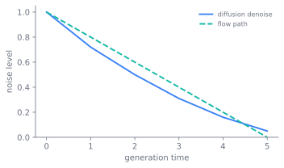

Diffusion and Flow Matching
Part II begins where next-token prediction stops being the natural generative order. Image, audio, and video models mostly do not produce one item after another from left to right; they start from noise and remove it. diffusion and its flow matching generalization are the generative principle behind almost all non-text media, and they are now reaching back into text. The central shift is simple but deep: generation becomes a path from disorder to structure, with the same network readable as denoiser, score, or velocity. EDM and flow matching are two ways of making that path better conditioned, and the frontier pressure is to collapse a long denoising chain, sometimes a thousand evaluations, toward one.

Why not autoregression
Autoregressive generation is sequential by construction: one token after another, left to right, a serial chain whose length is the output. For text that ordering is natural. For an image it is not: pixels have no canonical order, and forcing one wastes the structure. Diffusion takes a different route. Corrupt data into noise by a fixed, known process, then learn to reverse it, denoising the whole signal in parallel at each step. There is no left-to-right, the output size is fixed up front, and the model can attend to the entire partially-denoised signal at once. The cost moves from sequence length to step count, and most of this chapter is about driving that step count down.
The forward and reverse processes
The forward process gradually adds Gaussian noise to a datum over steps until little but noise remains, a fixed Markov chain with no parameters. Gaussian composition gives its marginal in closed form, so any noise level is reachable in one shot,
where is the surviving signal fraction. Generation runs the chain backwards, learning to undo one noising step at a time. The surprise of denoising diffusion probabilistic models (DDPM) is that the variational bound on this reverse process collapses, once the time-dependent weights are dropped, to an ordinary regression: predict the noise that was added at a randomly chosen step (Ho et al. 2020),
Two design choices inside this loop turned out to matter more than they look. The first is the noise schedule. The original linear destroys information too fast at high resolution, and a cosine schedule that keeps more signal late in the chain, with a small offset , improves likelihood and sample quality, alongside learning the reverse variances rather than fixing them (Nichol and Dhariwal 2021). The second is what the network predicts. The same target can be expressed three ways, and they are not numerically equal across the schedule: predicting degenerates at high noise where the target carries little signal, predicting degenerates at low noise, and the -prediction stays balanced across the whole range, which is why it became the parameterization of choice once distillation made each step span a wide band of signal-to-noise (Salimans and Ho 2022). The toy below makes the loop concrete: for one-dimensional Gaussian data the optimal noise-predictor is analytic, so we can sample from noise and watch the distribution come back.
import numpy as np
rng = np.random.default_rng(0)
mu, v0 = 3.0, 1.0 # data ~ N(mu, v0)
T = 1000
beta = np.linspace(1e-4, 0.02, T) # noise schedule
alpha = 1 - beta
abar = np.cumprod(alpha) # surviving signal fraction
def eps_star(x, t): # optimal epsilon-prediction (analytic)
var = abar[t] * v0 + (1 - abar[t])
return np.sqrt(1 - abar[t]) * (x - np.sqrt(abar[t]) * mu) / var
x = rng.normal(size=5000) # start from pure noise
for t in range(T - 1, -1, -1):
mean = (x - beta[t] / np.sqrt(1 - abar[t]) * eps_star(x, t)) / np.sqrt(alpha[t])
x = mean + (np.sqrt(beta[t]) * rng.normal(size=x.shape) if t > 0 else 0.0)
print(f"data N(mu={mu}, var={v0}); samples: mean={x.mean():.2f}, var={x.var():.2f}")
One framework: scores and SDEs
A second lineage arrived at the same place from a different direction. Score-based models learn the score, the gradient of the log-density , at many noise levels and sample by Langevin dynamics (Song and Ermon 2019). The link to the denoiser above is exact and worth seeing: by Tweedie's formula the optimal noise predictor is the score up to a scale, , and the theorem that licenses training a score model by denoising rather than by the intractable marginal is older than diffusion itself (Vincent 2011). Song et al. then showed the two lineages are one object: the forward process is a stochastic differential equation (SDE) carrying data to noise, generation is the reverse-time SDE, whose drift contains exactly that score (Anderson 1982), and both DDPM (a variance-preserving SDE) and score matching (a variance-exploding one) are discretizations of it (Song et al. 2021). The same work derives an equivalent deterministic probability-flow ordinary differential equation (ODE),
with the same marginals as the SDE. That ODE is the bridge to everything fast: the deterministic samplers below, and flow matching at the end of the chapter.
This whole construction was derived from non-equilibrium thermodynamics rather than borrowed as a loose metaphor, and the modern recipe then shed almost all of the physics it started from. Chapter 3 follows that borrowing and the point where the engineering left the source behind.
The recipe, put in order
For a few years the design space was a thicket of schedules, parameterizations, and scalings, each paper choosing differently. EDM cut through it by writing every diffusion model as one denoiser at a continuous noise level and separating three choices that had been tangled together (Karras et al. 2022). Preconditioning wraps the raw network so its input and output stay unit-variance at every noise level, , which makes the loss weight uniform across and removes a class of tuning. The noise levels are sampled from a log-normal during training and laid on a schedule with at sampling, and the probability-flow ODE is integrated with a second-order Heun step rather than Euler, reaching strong quality in about thirty-five evaluations. The lasting lesson is the disentangling: schedule, preconditioning, and sampler are orthogonal axes, and naming them separately is what let the rest of the field stop re-deriving the same choices.
Making it cheap and steerable
Three more moves turned a slow research method into a deployed one. Fewer steps came first: DDIM is a non-Markovian sampler that reuses the trained model but, at its deterministic setting, integrates the probability-flow ODE directly, reaching comparable quality 10 to 50 times faster (Song et al. 2021), and dedicated high-order solvers go further by analytically handling the linear part of that ODE in log-signal-to-noise coordinates, cutting good samples to roughly ten to twenty network evaluations (Lu et al. 2022). Affordability came from latent diffusion, which runs the whole process in the latent space of a pretrained autoencoder rather than on pixels, cutting compute by a large factor, and injects text or layout through cross-attention, the recipe behind Stable Diffusion (Rombach et al. 2022). Control came in two forms. Classifier guidance steers a sample with the gradient of a separately trained noised classifier (Dhariwal and Nichol 2021), and classifier-free guidance (CFG) removes that classifier by training one model both with and without the conditioning signal and extrapolating between them at sampling,
trading diversity for fidelity with a single weight (Ho and Salimans 2022). Progressive distillation then halves the step count repeatedly by training a student so one of its steps matches two of a deterministic teacher's, which is exactly where -prediction earns its keep (Salimans and Ho 2022). The backbone caught up with the rest of the book last: diffusion transformer (DiT) replaces the U-Net with a transformer over latent patches and finds sample quality improving as compute rises, putting diffusion on the same scaling curve as everything else (Peebles and Xie 2023).
Flow matching: learn a velocity, not a denoiser
Flow matching reframes the problem in the cleanest terms the field has found. Think of generation as an ODE that transports a noise distribution into the data distribution, and recall that a velocity field generates a given path of densities exactly when it satisfies the continuity equation , mass transported, never created. The catch is that the marginal velocity is an intractable average over all data points. The resolution is the conditional flow matching objective: regress the network onto the conditional field that transports noise to one fixed data point ,
Here chooses a point along the path, is a data point, is the intermediate sample on the path to it, is the network's velocity, and is the analytic velocity of that conditional path. The loss asks for the same thing a denoising loss asks for in diffusion, but in the language of motion: at every noisy point, point in the direction that would carry this sample toward data. Lipman et al. prove it has the same gradient as regressing the intractable marginal field, because the marginal target is itself the conditional expectation of the per-sample targets (Lipman et al. 2023). Training becomes simulation-free: sample a data point, sample a point on the path to it, regress onto a closed-form velocity, never integrate the ODE. Diffusion paths fall out as one choice of conditional path; straight, constant-speed optimal-transport paths fall out as a more efficient other.
That straight-path choice is the lever. rectified flow learns the velocity of the linear interpolant , whose target is the constant , and adds a "reflow" step that re-couples noise to the data the model itself generates and retrains, straightening the trajectories further; a straight trajectory is integrated exactly by a single Euler step, which is the path to one-step sampling (Liu et al. 2023). Stochastic interpolants are the umbrella over all of this, showing that one fixed interpolation between noise and data yields both a deterministic transport and a noisy diffusion as a free choice, so flow matching, rectified flow, and diffusion are reframings of a single construction (Albergo and Vanden-Eijnden 2023; Albergo et al. 2023).
The last step is to collapse the path entirely. Consistency models train a network with a self-consistency property, that every point on a probability-flow ODE trajectory maps to the same origin, so one forward pass jumps from noise to data; it can be distilled from a diffusion teacher or trained standalone (Song et al. 2023). The same one-step target is reached by other routes: distilling in latent space (Luo et al. 2023), matching the output distribution of a multi-step teacher rather than its per-trajectory points (Yin et al. 2024), or adding an adversarial loss to reach few-step photorealism (Sauer et al. 2024). The arc across this section is a single quantity coming down, the number of sequential network evaluations a sample costs, from a thousand for DDPM toward one.
The loop back to language
Diffusion is now returning to text. The discrete analogue replaces Gaussian noise
with a categorical corruption: D3PM diffuses over a transition matrix, and its
absorbing-state kernel, which sends each token to a [MASK] with growing
probability, is the bridge that makes a masked language model a diffusion model
(Austin et al. 2021). SEDD carries the score idea across by learning ratios of the
data distribution rather than a Gaussian score, reaching autoregressive quality at
GPT-2 scale (Lou et al. 2024). LLaDA scales the masked-denoising objective to train a
language model from scratch, predicting masked tokens by a reverse process rather
than left to right, and reports it competitive with an autoregressive LLaMA3-8B at
in-context learning (Nie et al. 2025); commercial diffusion language models have
since appeared, trading some quality for parallel decoding speed. Chapter 11 takes
up this thread in full; here it is enough that the denoising principle has come
back to the modality this book began with.
Whether non-autoregressive diffusion language models can match autoregressive LLMs at scale is unsettled. LLaDA shows competitiveness at 8B, but against the authors' own controlled baselines rather than external frontier models, and the strongest "surpasses" result is narrow, a reversal task GPT-4o handles poorly (Nie et al. 2025). The case for diffusion text rests on parallel decoding and bidirectional context; the case against is that autoregression still owns every frontier model and has the more mature scaling and serving story. Treat diffusion for language as promising and unproven above small scale.
The sampler's step count is a serving-cost lever that reaches back into the training objective. A thousand-step DDPM is too slow to serve at scale, so the field trains specifically for few-step sampling, rectified flow's straight paths and consistency distillation, rather than treating sampling as an afterthought. The inference budget per image, paid on every generation, dictates which generative objective is worth training, the same constraint Chapter 4 draws for tokens, here drawn for denoising steps.
Further reading
- Ho et al., “Denoising Diffusion Probabilistic Models” (DDPM; simplified noise-prediction objective), 2020. arXiv:2006.11239
- Song & Ermon, “Generative Modeling by Estimating Gradients of the Data Distribution” (score matching at many noise levels; annealed Langevin sampling), 2019. arXiv:1907.05600
- Song et al., “Score-Based Generative Modeling through Stochastic Differential Equations” (SDE framework; DDPM and score matching as discretizations; probability-flow ODE), 2021. arXiv:2011.13456
- Song et al., “Denoising Diffusion Implicit Models” (non-Markovian sampler; 10-50x fewer steps; deterministic at sigma=0), 2021. arXiv:2010.02502
- Ho & Salimans, “Classifier-Free Diffusion Guidance” (joint conditional/unconditional training; guidance weight trades diversity for fidelity), 2022. arXiv:2207.12598
- Rombach et al., “High-Resolution Image Synthesis with Latent Diffusion Models” (diffusion in autoencoder latent space; cross-attention conditioning (Stable Diffusion)), 2022. arXiv:2112.10752
- Lipman et al., “Flow Matching for Generative Modeling” (simulation-free regression onto a target vector field; diffusion paths as a special case), 2023. arXiv:2210.02747
- Liu et al., “Flow Straight and Fast: Learning to Generate and Transfer Data with Rectified Flow” (straight-line transport; few/one-step sampling; recursive rectification), 2023. arXiv:2209.03003
- Peebles & Xie, “Scalable Diffusion Models with Transformers” (DiT; transformer backbone on latent patches; quality scales with Gflops), 2023. arXiv:2212.09748
- Song et al., “Consistency Models” (map any ODE-trajectory point to its origin; one-step generation; distilled or standalone), 2023. arXiv:2303.01469
- Nie et al., “Large Language Diffusion Models” (LLaDA; masked-denoising diffusion LM competitive with autoregressive LLaMA3-8B), 2025. arXiv:2502.09992
- Nichol & Dhariwal, “Improved Denoising Diffusion Probabilistic Models” (cosine noise schedule and learned reverse variances), 2021. arXiv:2102.09672
- Salimans & Ho, “Progressive Distillation for Fast Sampling of Diffusion Models” (halve sampling steps by distillation; introduces v-prediction), 2022. arXiv:2202.00512
- Vincent, “A Connection Between Score Matching and Denoising Autoencoders” (denoising score matching shares the minimizer of marginal score matching), 2011. direct.mit.edu
- Anderson, “Reverse-Time Diffusion Equation Models” (the classical reverse-time SDE whose drift contains the score), 1982. doi.org
- Karras et al., “Elucidating the Design Space of Diffusion-Based Generative Models” (EDM; disentangles preconditioning, noise schedule, and sampler; Heun ODE step), 2022. arXiv:2206.00364
- Lu et al., “DPM-Solver: A Fast ODE Solver for Diffusion Probabilistic Model Sampling in Around 10 Steps” (high-order ODE solver in log-SNR coordinates; 10-20 NFE), 2022. arXiv:2206.00927
- Albergo & Vanden-Eijnden, “Building Normalizing Flows with Stochastic Interpolants” (stochastic interpolants; learn the velocity from a fixed interpolation), 2023. arXiv:2209.15571
- Albergo et al., “Stochastic Interpolants: A Unifying Framework for Flows and Diffusions” (one interpolant yields both deterministic transport and noisy diffusion), 2023. arXiv:2303.08797
- Luo et al., “Latent Consistency Models: Synthesizing High-Resolution Images with Few-Step Inference” (consistency distillation in Stable Diffusion's latent space; 2-4 step generation), 2023. arXiv:2310.04378
- Yin et al., “One-step Diffusion with Distribution Matching Distillation” (distill a multi-step model into a one-step generator by matching output distribution), 2024. arXiv:2311.18828
- Sauer et al., “Adversarial Diffusion Distillation” (score distillation plus an adversarial loss for 1-4 step photorealism (SDXL-Turbo)), 2024. arXiv:2311.17042